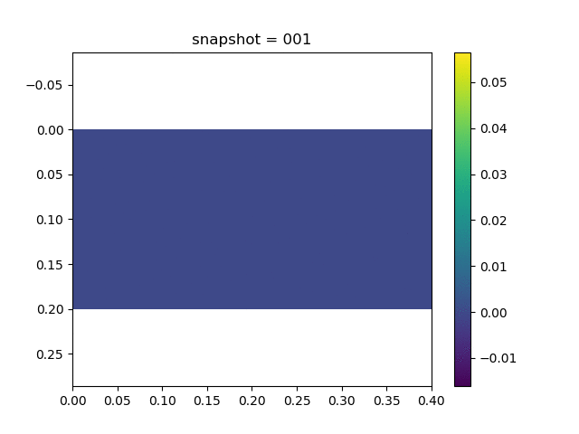
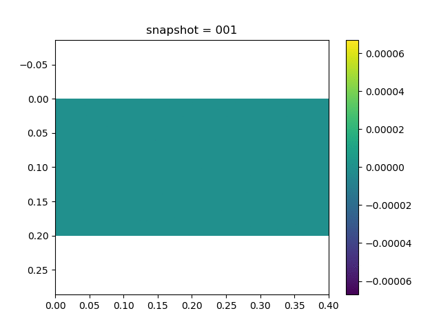
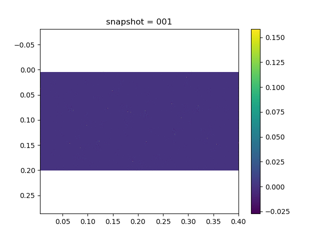
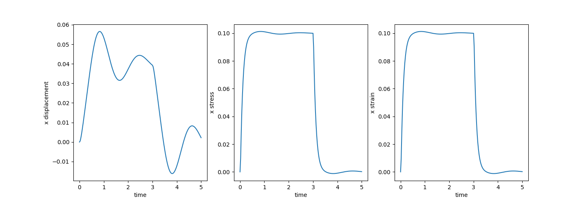
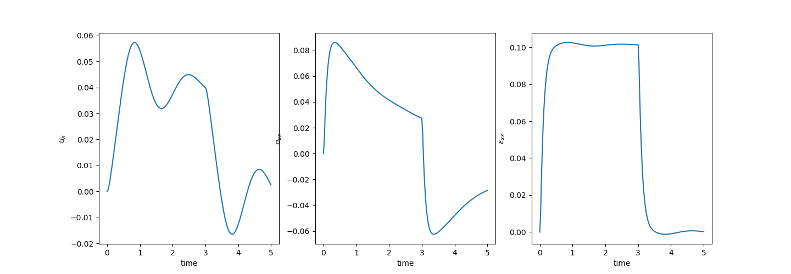

Viscoelasticity
Viscoelasticity Theory
To describe the viscoelasticity, we need to relate both the viscosity strain $\epsilon^{vp}$ and the elasticity strain $\epsilon^e$ to the stress $\sigma$. The latter is given by
The constitutive relation of $\epsilon^{vp}$ is given by
We can consider the elasticity strain associated with a spring while the viscoelasticity associated with a dashed pot. Then based on how we combine the spring or the dashed pot, we can have many cases [linearvisco]
| Maxwell Model | Kevin Model | Standard Linear Model |
|---|---|---|
 |  |  |
| $\begin{aligned}\epsilon &= \epsilon_1 + \epsilon_2\\\epsilon_1 &= \frac{\sigma}{E}\\\dot\epsilon_2 &= \frac{\sigma}{\eta}\end{aligned}$ | $\begin{aligned}\sigma &= \sigma_1 + \sigma_2\\\epsilon_1 &= \frac{\sigma}{E}\\\dot\epsilon_2 &= \frac{\sigma}{\eta}\end{aligned}$ | $\begin{aligned}\sigma &= \sigma_1 + \sigma_2\\\epsilon &= \epsilon_1 + \epsilon_2\\\sigma &= E_1 \epsilon_1\\\sigma_1 &= E_2\epsilon_2\\\sigma_2 &= \eta\dot\epsilon_2\\\end{aligned}$ |
The most general constitutive equation has the following form
For high dimensional case, assume that the bulk modulus is $K$, then we have [linearvisco2]
Numerical Example
We consider the two dimensional Maxwell material
along with the balance of linear momentum equation
In the matrix format, the constitutive relation has the form
Here $\gamma_{xy}=2\epsilon_{xy}$, where $\epsilon_{xy}$ is the shear modulus. Note that when $\eta=\infty$, this constitutive relation is exactly the plain strain linear elasticity.
We use the implicit discretization for Eq. (1)
or in a simpler form
Here $S$ and $H$ are defined as
The parameters used in the simulation are
| $\lambda$ | $\mu$ | $\eta$ | $\Delta t$ and $T$ | Domain and $h$ |
|---|---|---|---|---|
| 0.0 | 0.5 | 1.0 | 0.025 and 5.0 | $[0,0.2]\times [0,0.4]$ and 0.01 |
| Description | Linear Elasticity | Viscoelasticity |
|---|---|---|
| $x$ displacement |  |  |
| $y$ displacement |  |  |
| Von Mises Stress |  | |
| Statistics of Middle Right point |  |  |
Simulation Code
- Linear Elasticity
using Revise
using PoreFlow
using PyCall
using LinearAlgebra
using PyPlot
using SparseArrays
np = pyimport("numpy")
β = 1/4; γ = 1/2
a = b = 0.1
m = 40
n = 20
h = 0.01
NT = 200
Δt = 5/NT
bdedge = []
for j = 1:n
push!(bdedge, [(j-1)*(m+1)+m+1 j*(m+1)+m+1])
end
bdedge = vcat(bdedge...)
bdnode = Int64[]
for j = 1:n+1
push!(bdnode, (j-1)*(m+1)+1)
end
M = compute_fem_mass_matrix1(m, n, h)
S = spzeros((m+1)*(n+1), (m+1)*(n+1))
M = [M S;S M]
H = [1.0 0.0 0.0
0.0 1.0 0.0
0.0 0.0 0.5]
K = compute_fem_stiffness_matrix(H, m, n, h)
C = a*M + b*K # damping matrix
L = M + γ*Δt*C + β*Δt^2*K
L, Lbd = fem_impose_Dirichlet_boundary_condition(L, bdnode, m, n, h)
a = zeros(2(m+1)*(n+1))
v = zeros(2(m+1)*(n+1))
d = zeros(2(m+1)*(n+1))
U = zeros(2(m+1)*(n+1),NT+1)
Sigma = zeros(NT+1, 4m*n, 3)
Varepsilon = zeros(NT+1, 4m*n, 3)
for i = 1:NT
global a, v, d
T = eval_f_on_boundary_edge((x,y)->0.1, bdedge, m, n, h)
T = [T zeros(length(T))]
rhs = compute_fem_traction_term(T, bdedge, m, n, h)
if i*Δt>3.0
rhs = zero(rhs)
end
td = d + Δt*v + Δt^2/2*(1-2β)*a
tv = v + (1-γ)*Δt*a
rhs = rhs - C*tv - K*td
rhs[[bdnode; bdnode.+(m+1)*(n+1)]] .= 0.0
a = L\rhs
d = td + β*Δt^2*a
v = tv + γ*Δt*a
U[:,i+1] = d
Varepsilon[i+1,:,:] = eval_strain_on_gauss_pts(U[:,i+1], m, n, h)
Sigma[i+1,:,:] = Varepsilon[i+1,:,:] * H
end
visualize_scattered_displacement(U, m, n, h; name = "_linear", xlim_=[-0.01,0.5], ylim_=[-0.05,0.22])
visualize_displacement(U, m, n, h; name = "_linear")
visualize_stress(H, U, m, n, h; name = "_linear")
close("all")
figure(figsize=(15,5))
subplot(1,3,1)
idx = div(n,2)*(m+1) + m+1
plot((0:NT)*Δt, U[idx,:])
xlabel("time")
ylabel("x displacement")
subplot(1,3,2)
idx = 4*(div(n,2)*m + m)
plot((0:NT)*Δt, Sigma[:,idx,1])
xlabel("time")
ylabel("x stress")
subplot(1,3,3)
idx = 4*(div(n,2)*m + m)
plot((0:NT)*Δt, Varepsilon[:,idx,1])
xlabel("time")
ylabel("x strain")
savefig("linear.png")- Viscoelasticity
using Revise
using PoreFlow
using PyCall
using LinearAlgebra
using PyPlot
using SparseArrays
np = pyimport("numpy")
λ = 0.0
μ = 0.5
η = 1.0
β = 1/4; γ = 1/2
a = b = 0.1
m = 40
n = 20
h = 0.01
NT = 200
Δt = 5/NT
bdedge = []
for j = 1:n
push!(bdedge, [(j-1)*(m+1)+m+1 j*(m+1)+m+1])
end
bdedge = vcat(bdedge...)
bdnode = Int64[]
for j = 1:n+1
push!(bdnode, (j-1)*(m+1)+1)
end
G = [1/Δt+μ/η -μ/3η 0.0
-μ/3η 1/Δt+μ/η-μ/3η 0.0
0.0 0.0 1/Δt+μ/η]
S = [2μ/Δt+λ/Δt λ/Δt 0.0
λ/Δt 2μ/Δt+λ/Δt 0.0
0.0 0.0 μ/Δt]
invG = inv(G)
H = invG*S
M = compute_fem_mass_matrix1(m, n, h)
Zero = spzeros((m+1)*(n+1), (m+1)*(n+1))
M = [M Zero;Zero M]
K = compute_fem_stiffness_matrix(H, m, n, h)
C = a*M + b*K # damping matrix
L = M + γ*Δt*C + β*Δt^2*K
L, Lbd = fem_impose_Dirichlet_boundary_condition(L, bdnode, m, n, h)
a = zeros(2(m+1)*(n+1))
v = zeros(2(m+1)*(n+1))
d = zeros(2(m+1)*(n+1))
U = zeros(2(m+1)*(n+1),NT+1)
Sigma = zeros(NT+1, 4m*n, 3)
Varepsilon = zeros(NT+1, 4m*n, 3)
for i = 1:NT
global a, v, d
T = eval_f_on_boundary_edge((x,y)->0.1, bdedge, m, n, h)
T = [T zeros(length(T))]
rhs = compute_fem_traction_term(T, bdedge, m, n, h)
if i*Δt>3.0
rhs = zero(rhs)
end
F = compute_strain_energy_term(Sigma[i,:,:]*invG/Δt, m, n, h) - K * U[:,i]
# @show norm(compute_strain_energy_term(Sigma[i,:,:]*invG/Δt, m, n, h)), norm(K * U[:,i])
rhs -= Δt^2 * F
td = d + Δt*v + Δt^2/2*(1-2β)*a
tv = v + (1-γ)*Δt*a
rhs = rhs - C*tv - K*td
rhs[[bdnode; bdnode.+(m+1)*(n+1)]] .= 0.0
a = L\rhs
d = td + β*Δt^2*a
v = tv + γ*Δt*a
U[:,i+1] = d
Varepsilon[i+1,:,:] = eval_strain_on_gauss_pts(U[:,i+1], m, n, h)
Sigma[i+1,:,:] = Sigma[i,:,:]*invG/Δt + (Varepsilon[i+1,:,:]-Varepsilon[i,:,:])*(invG*S)
end
visualize_scattered_displacement(U, m, n, h; name = "_viscoelasticity", xlim_=[-0.01,0.5], ylim_=[-0.05,0.22])
visualize_displacement(U, m, n, h; name = "_viscoelasticity")
visualize_stress(H, U, m, n, h; name = "_viscoelasticity")
close("all")
figure(figsize=(15,5))
subplot(1,3,1)
idx = div(n,2)*(m+1) + m+1
plot((0:NT)*Δt, U[idx,:])
xlabel("time")
ylabel("\$u_x\$")
subplot(1,3,2)
idx = 4*(div(n,2)*m + m)
plot((0:NT)*Δt, Sigma[:,idx,1])
xlabel("time")
ylabel("\$\\sigma_{xx}\$")
subplot(1,3,3)
idx = 4*(div(n,2)*m + m)
plot((0:NT)*Δt, Varepsilon[:,idx,1])
xlabel("time")
ylabel("\$\\epsilon_{xx}\$")
savefig("visco.png")
- linearviscohttps://academic.csuohio.edu/duffys/LinearVisco.pdf
- linearvisco2http://solidmechanics.org/text/Chapter36/Chapter36.htm